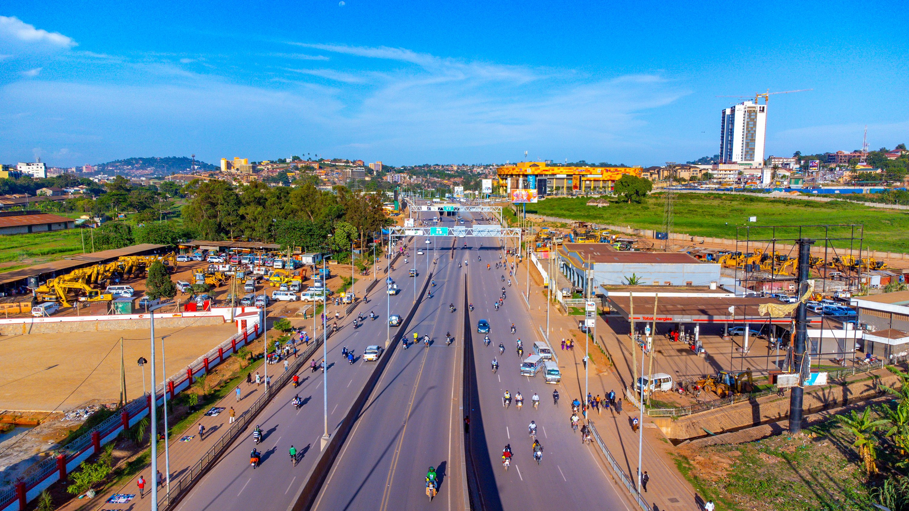

Welcome

Photo: Traffic on Jinja Road, Kampala — Wikimedia Commons
Uganda continues to record a high number of road traffic accidents, and pedestrians alone make up a large share of road deaths every year. Many of these accidents happen again and again at the same stretches of road — places road safety experts call "black spots".
This website was built so that drivers, commuters, schools planning trips, and road-safety stakeholders such as traffic police and NGOs can see which roads are historically dangerous, understand why accidents happen there, get safety advice, and report new hazards.
What you can do on this site
View the Black Spot Map
See known accident-prone locations across Uganda on an interactive map, with details on risk level and past incidents at each spot.
Read Causes & Safety Advice
Learn the common causes of accidents at black spots and get safety tips if you are a driver, a pedestrian, or a school organising a trip.
Report an Incident
Submit a new accident or hazard report so other road users are warned about it.
Find Emergency Contacts
Quickly find traffic police and emergency service numbers in case of a road accident.